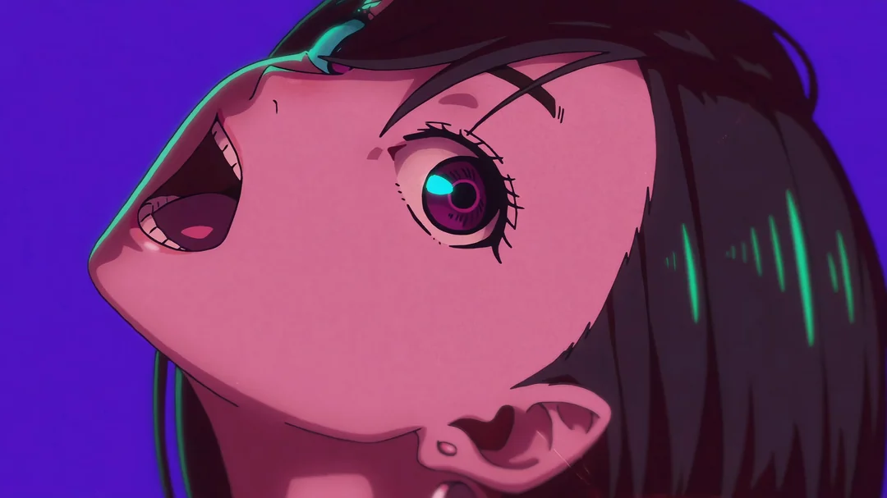

My name is Karl Eldwin Dayrit, a 21-year-old student at the City of Malabon University. I graduated from San Diego Parochial School, where I developed a strong foundation for my education. I am an aspiring information technology officer with a passion for digital design, video editing, and directing. My diverse interests and skills drive me to explore various creative avenues in the digital world, and I am eager to make an impact in my future career.

Karl Eldwin Dayrit
Contacts
Connect with me!
Let’s Collaborate!
If you’re interested in collaborating or have any inquiries, I’d love to connect! Whether you're looking for a creative partner in digital design, video editing, or IT projects, I’m eager to team up and explore new ideas together.
Feel free to reach out to me through any of the following channels:
Phone: 09273122418
University Email: 202201786@cityofmalabonuniversity.edu
Personal Email: kdayrit17@gmail.com
Facebook: Eldwin Dayrit
Discord: Kyomin!
Let’s bring our ideas to life and make something amazing happen!
Karl Eldwin Dayrit
Achievements
My experiences
Visionary Designer and Creative Contributor
Architect of Memorable Moments
Spearheaded the creative direction for the 2024 Graduation Ceremony of CCS Students, shaping a visual narrative that resonated with tradition and innovation.
Designed concepts and aesthetics for a variety of university events, including graduations, photobooths, University Week, CCS Week, general assemblies, academic forums, and honors assemblies, leaving a lasting impact through creativity and attention to detail.
Theater and Film Excellence
Best Stage Director, SDPS 2019
Transformed theatrical visions into stunning productions, recognized for outstanding stage management and artistic innovation.
Breakthrough Actor, SDPS 2020
Honored for delivering a groundbreaking performance that captivated audiences and demonstrated remarkable range.
Film-Making Champion, CCS-CMU 2022
Created an award-winning short film, blending storytelling and cinematography to achieve excellence in filmmaking.
Acclaimed Visual Artist
1st Runner-Up, Art Contest (Theme: Honesty)
Crafted an evocative artwork celebrating integrity and truthfulness, earning widespread admiration.
Champion, Art Contest (Theme: Buwan ng Wika)
Produced a vibrant, culturally rich piece that honored the beauty and significance of Filipino heritage and language.
While my experiences may seem modest in number, I believe their impact is profound. Each achievement represents a commitment to creativity, innovation, and leaving a meaningful imprint on every project I undertake.
Karl Eldwin Dayrit
Integrative Programming Technologies
An activity
This activity, focused on creating a comprehensive portfolio using HTML, CSS, and JavaScript, is meticulously prepared and submitted by **Karl Eldwin Dayrit**. It serves as a practical demonstration of applied web development skills, highlighting the integration of design principles, coding techniques, and interactive functionality. This submission is presented as a requirement for academic evaluation under the guidance of **Professor Cerwin Zaulda**, showcasing dedication to mastering modern web technologies and delivering a professional, creative output.